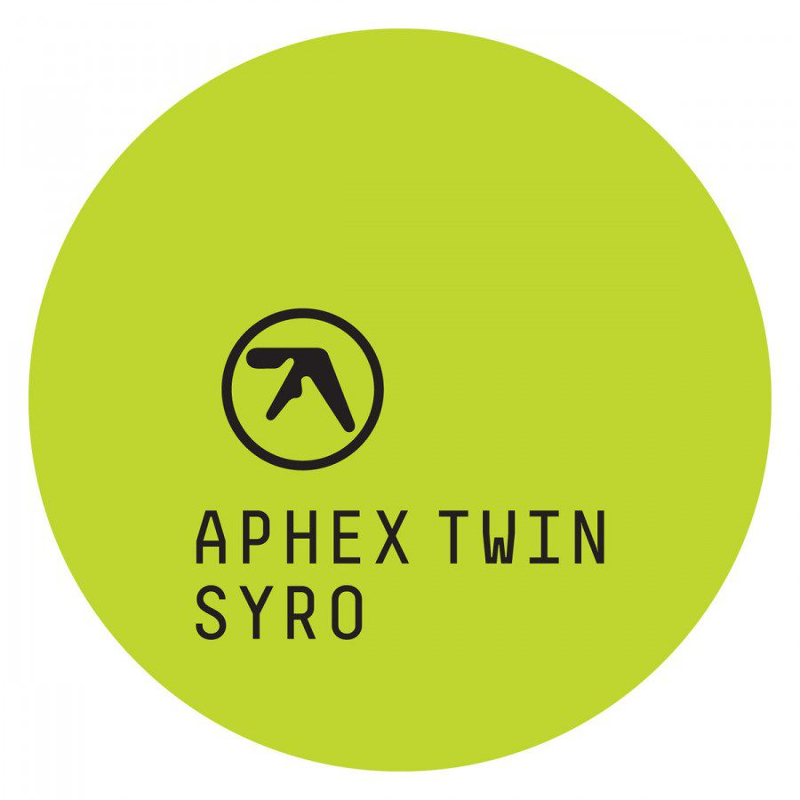

Apres 13 ans de silence radio, le maître revient. Syro n'essaie pas de réinventer la roue, mais de la perfectionner il développe un univers sonore complexe et captivant.
La Méthode : 4 ans de composition avec un arsenal de synthétiseurs vintage accumulés depuis les années 80, chaque rythme reprogrammé à la main.
Mystère : L'album a été annoncé uniquement via le darknet, accessible par Tor — comme un tract rave glissé sous une porte secrète.